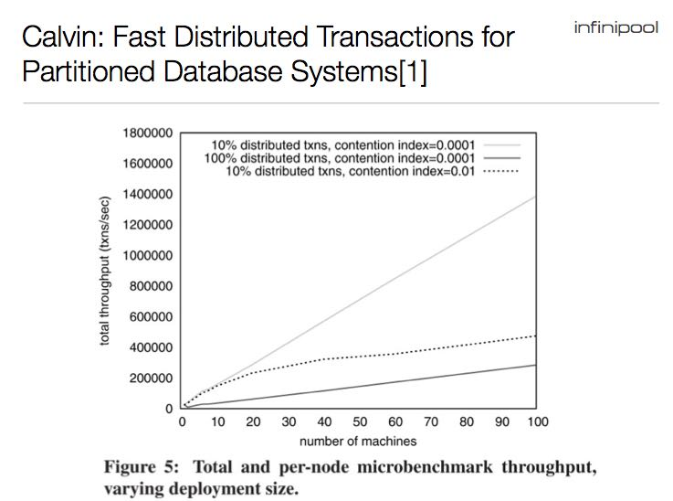
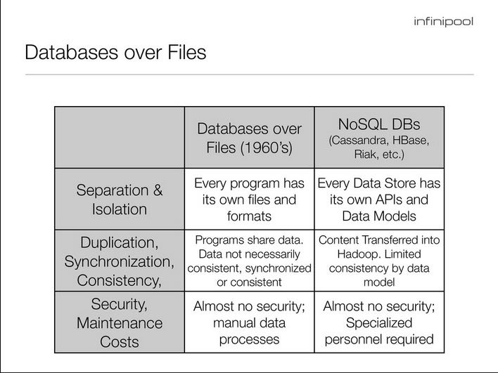
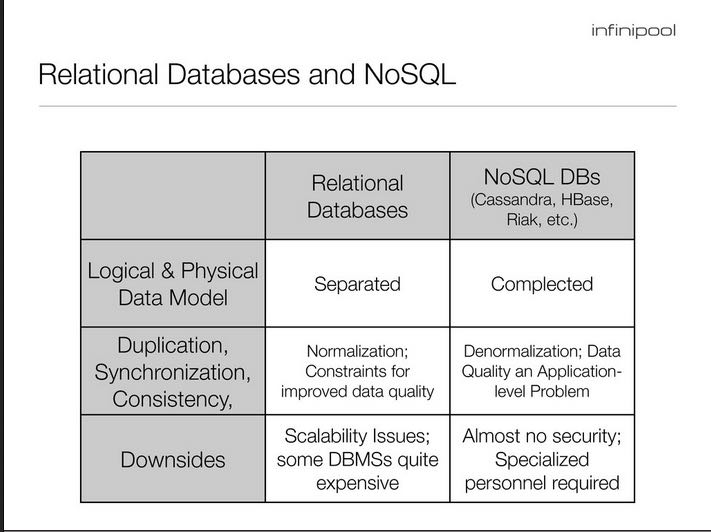

NoSQL - Back to the Future or Yet Another DB Feature
https://speakerdeck.com/mas/nosql-back-to-the-future-or-yet-another-db-feature
“For those of you who think we are engaged in some sort of darwinian processes that make things better for us, it’s actually quite the opposite.” http://bit.ly/AlanKay2011
NoSQL Technology is a step back.
- Myth1: NoSQL Technology models Applications more closely than traditional Databases.
- Data is scattered all over NoSQL land!
- No (simple) way to ensure various quality domains of data
- timeliness and appropriateness
- correctness and consistency
- Data Integration and Data Quality assurance becomes a full-stack concern!
- Myth2: There are no transactions in NoSQL because transactions do not scale. http://cs-www.cs.yale.edu/homes/dna/papers/calvin-sigmod12.pdf
- Myth3: NoSQL Data Stores are faster.
- Yes, they are fast. Except the other guys do their homework, too.

Databases over Files

Relational Databases and NoSQL

Clain:
- Claim #1: NoSQL Technology is a step back.
- Claim #2: NoSQL will become yet another DB Feature and/or Cloud Computing Service.
- Claim #3: PostSQL Databases will be indistinguishable from Data Communication Services.